Skills en ervaringen
Over mezelf
Ik ben een student aan de Hogeschool van Amsterdam en studeer daar Communicatie en Multimedia Design (CMD) op HBO niveau. Hiervoor heb ik al een Informatica opleiding gedaan die ik heb gevolgd tot en met Propedeuse. Ik leef vaak met het motto: "Als je iets doet, doe het dan goed". Ik ben niet iemand die er van houdt om half werk te leveren. Als ik iets moet doen, ga ik er ook echt voor. Als ik mezelf kort en bondig zou moeten beschijven, zou ik voor mezelf deze woorden gebruiken: Mijn perfectionistische manier van werken leidt vaak tot mooie eindresultaten. Maar zorgt er ook vaak voor dat ik langer bezig ben dan nodig is.
- Creatief
- Perfectionistisch
- Doener
- Muziekliefhebber
- Technisch
Mijn persoonlijke tijdlijn
- 28 juni 2019
- ●
- Propedeuse CMD HBO
- 26 Oktober 2017
- ●
- Propedeuse Informatica HBO
- 11 juni 2015
- ●
- HAVO NT/NG